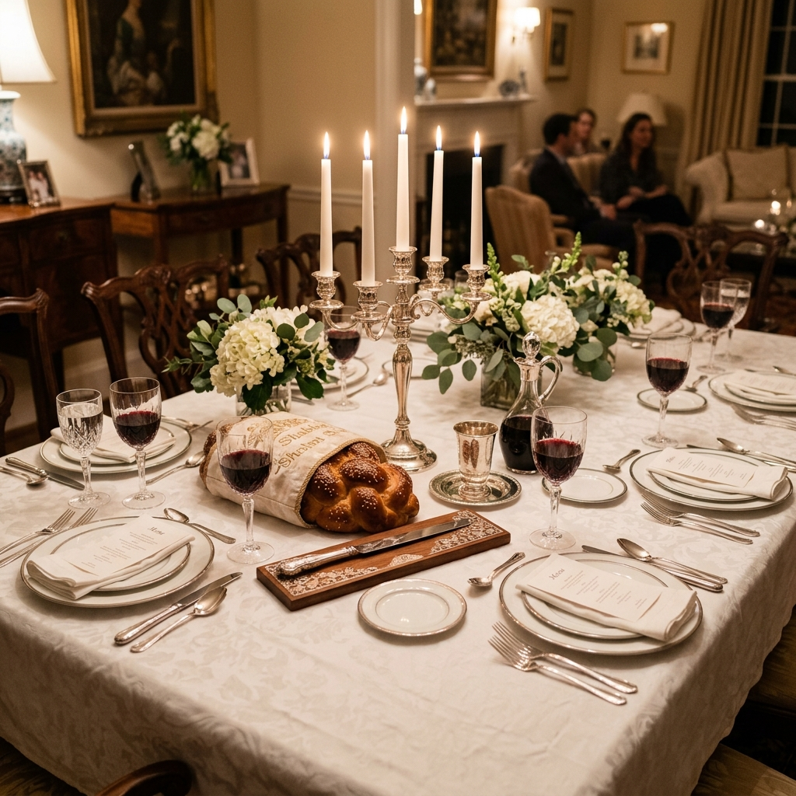

The Morning Celebration
Honoring Life's
Honoring Life's
Most Sacred Moments
A Bris or Kiddush calls for a spread that reflects the warmth and joy of the occasion. The Wandering Chef brings tradition and elegance together — from artfully arranged smoked fish stations to freshly baked challah, beautifully presented fruit platters, and decadent pastry tables.
We understand that a Bris is not just a meal — it's a gathering of family and friends to witness and celebrate one of Judaism's most profound traditions. Our team handles every culinary detail so you can focus on what matters most.
Book for Your Event
Photo Gallery
See Our Work
A glimpse at some of our most beautiful Bris and Kiddush celebrations.




Plan Your Celebration
Let's Make It Perfect
Contact John to discuss your Bris or Kiddush catering needs.
Get a Custom Quote